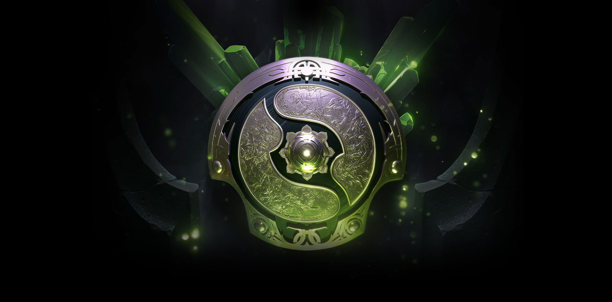

快向国王行礼，Mski完胜TNC晋级下一轮
MDL长沙站胜者组首轮NVIDIA宣布了TensorRT推理优化工具与TensorFlow的集成。TensorRT集成将可用于TensorFlow 1.7分支。TensorFlow是当今最受欢迎的深度学习框架，而NVIDIA TensorRT通过优化和高性能运行时方法加速了基于GPU平台的深度学习推理。我们希望在使用TensorRT的情况下，给TensorFlow的用户使用尽可能高的推理性能和接近透明的工作流程。新的集成提供了一个简单的API，它可以在TensorFlow内使用Tensor
第一局
而已领取完美特权码的玩家，可于今天中午12点后登录》》》购票页面《《《，点击“使用特权码购票”，在购票网站的专属特权购票页面，输入完美特权码提交验证，即可购买Supermajor门票并享受专属优惠。完美特权码和现场门票的数量有限，先到先得，请领取完美特权码的玩家尽快用于购票。
 门票提供电子票，纸质票两种门票形式，购买电子票的用户可以到线下换取实体票；购买纸质票的用户会通过票务公司邮寄给用户。为了节省您在现场排队等待的时间，也减轻现场的拥堵，建议选择购买纸质票。更多票务问题，请于购票页面联系大麦网客服。
战队摩拳擦掌，英雄即将集结，这是体验DOTA2赛事的绝佳机会。快来购买门票前往现场，为心爱的战队喝彩，见证战队踏上通往国际邀请赛的台阶！
门票提供电子票，纸质票两种门票形式，购买电子票的用户可以到线下换取实体票；购买纸质票的用户会通过票务公司邮寄给用户。为了节省您在现场排队等待的时间，也减轻现场的拥堵，建议选择购买纸质票。更多票务问题，请于购票页面联系大麦网客服。
战队摩拳擦掌，英雄即将集结，这是体验DOTA2赛事的绝佳机会。快来购买门票前往现场，为心爱的战队喝彩，见证战队踏上通往国际邀请赛的台阶！
第二局
| id | 书名 | 预览图 |
|---|